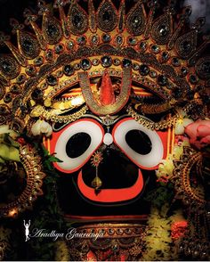

PURI
Puri, situated on the eastern coast of Odisha, is renowned for its ancient Jagannath Temple, dedicated to Lord Jagannath, a form of Lord Vishnu. The temple, along with its annual Rath Yatra (chariot festival), attracts millions of pilgrims and tourists every year. Besides its religious significance, Puri is famed for its pristine beaches, especially the Golden Beach, where visitors can indulge in various water sports and beach activities. The city also boasts a vibrant culture, with traditional Odissi dance performances, intricate handicrafts, and delectable seafood adding to its charm

Places near by:
1.Raghurajpur Artist Village :
In 2000, Raghurajpur was honored as a 'heritage village' by the Indian National Trust for Art and Cultural Heritage (INTACH), fostering a renaissance of traditional art forms among its artisans. Both men and women actively engage in this artistic pursuit. These artisans warmly welcome visitors, readily sharing insights into the art's origins and techniques. Many families graciously open their homes to guests, offering direct purchases of their creations. For a deeper experience, visitors can even partake in lessons offered by the artisans for a separate fee. As you explore this vibrant artistic haven, take a moment to honor the legacy of Guru Kelucharan Mohapatra, a celebrated luminary of Odissi dance whose roots trace back to Raghurajpur.
2.Puri Beach :
Puri Beach is one of the finest coastlines in East India, bordering the Bay of Bengal and is located at a distance of 35 km from the Sun Temple. With the sun gleaming on the pristine waters of the beach, the place is ideal for holiday makers looking for some solitude. It is often flocked by devotees visiting the beach for a purification dip who come to Puri to pay their homage to Lord Jagannath. The beach is also renowned for the sand sculptures made by internationally known sand artist Sudarshan Patnaik. The sculptures are usually inspired by the art covering the temple walls or other mythological character or episode
3.Ganesh Temple :
Inside the famous Jagannath temple complex in Puri, is situated a small Ganesh temple, housing an exclusive image of Ganesh known as Natya Ganesh i.e. Dancing Ganesh. Inside the famous Jagannath temple complex in Puri, is situated a small Ganesh temple, consisting of an exclusive image of Ganesha known as Natya Ganesh i.e. Dancing Ganesh. The temple has great archaeological significance. In spite of its small size, every year large number of devotees offer their prayers. History reveals that the idol is gifted by the King of Kanchi. The Jagannath temple complex comprises of many other temples dedicated to gods Hanuman, Surya, Saraswati, Vimala. In front of the Ganesh temple, a small water-pot built up of stones known as Rohinikund is also present.